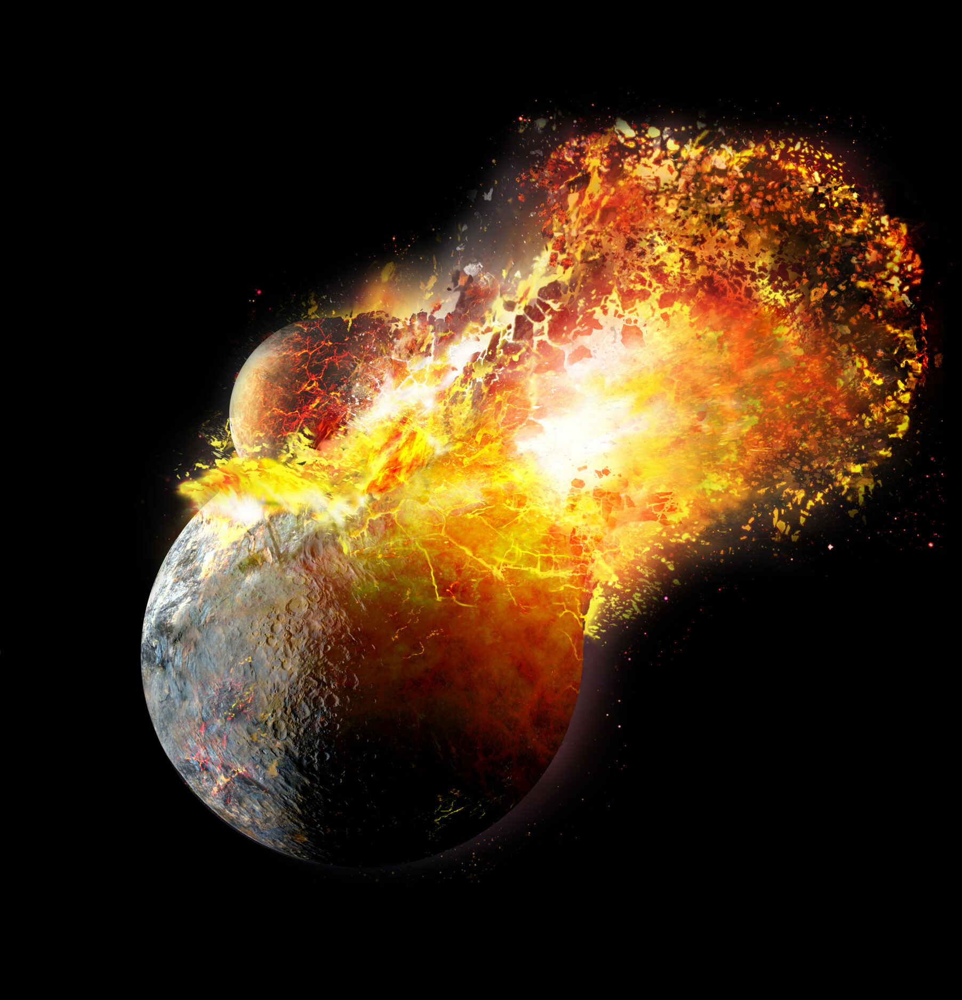

Are we alone? This is one of the most captivating questions, in my view. As an astronomer, I help try to answer this question by theorizing about the most promising observational targets in the search for life beyond Earth. This work relies largely on extrapolating what we know about life on our own planet to distant exoplanets. While life elsewhere is likely to differ greatly from life on Earth, our search must begin with the knowledge we have.
When we think of asteroid impacts, we don’t typically associate them with promoting life—after all, this is what led to the extinction of the dinosaurs. Yet without asteroid impacts, Earth may never have become habitable in the first place. During the late heavy bombardment, an intense period of asteroid impacts, Earth likely received most, if not all, of its water and experienced key atmospheric changes that made the emergence of life possible. For this reason, we argue that if asteroid impacts are essential for life, we can narrow our search for habitable worlds by focusing on planetary systems with distant giant planets like Jupiter and Saturn, which help direct asteroids toward inner rocky planets. I spoke about our research on SETI live and you can read more about it here.

Another counterintuitive idea is that giant impacts—such as the one that formed our Moon—may be essential for habitability. Without Earth’s violent history, we likely wouldn’t have a Moon, a magnetic field, a secondary atmosphere, or plate tectonics—all features closely tied to Earth’s ability to support life. By simulating the long-term stability of compact systems formed through pebble accretion, like TRAPPIST-1, we identified observable traits of systems that have undergone late-stage instabilities that resulted in giant impacts and, perhaps surprisingly, may be more likely to harbor habitable planets. Read more about it here.